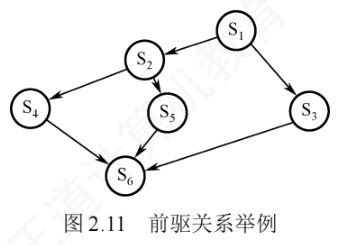
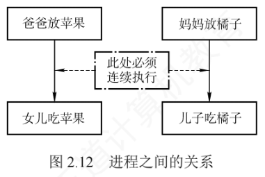
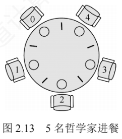

2.3 同步与互斥
学习本节时，请先带着三个问题：①为什么要引入进程同步的概念？②不同的进程之间会存在什么关系？③当单纯用本节介绍的方法解决这些问题时，会遇到什么新的问题吗？答案将在本节末尾的「2.3.7 本节小结」中逐一给出。
用 PV 操作解决进程之间的同步、互斥问题是本节的重点，统考中频繁考查这一内容，务必多加练习，掌握好求解该类问题的方法。
2.3.1 同步与互斥的基本概念
在多道程序环境下，进程是并发执行的，不同进程之间存在多种相互制约关系。以计算表达式 \(1+2\times3\) 为例：假设系统为此创建两个进程——乘法进程和加法进程，显然加法进程必须等乘法进程完成后才能正确执行。然而，由于操作系统的异步性，若不加以约束，加法进程完全有可能先于乘法进程运行，从而导致计算结果错误。因此需要设计一种机制，确保加法进程只能在乘法进程结束后才开始执行——这正是本节要讨论的问题。
1. 临界资源
虽然多个进程可以共享系统中的各种资源，但其中许多资源在同一时刻仅允许一个进程访问，这类资源称为临界资源。常见的临界资源包括物理设备（如打印机），以及被多个进程共享的变量、数据结构等。
对临界资源的访问必须以互斥方式进行。每个进程中访问临界资源的那段代码称为临界区。为保证临界资源的正确使用，可将对临界资源的访问过程分为四个部分：
- 进入区。进入临界区之前，检查当前是否允许进入；若允许，则设置「正在访问临界区」的标志，以阻止其他进程同时进入临界区。
- 临界区。进程中实际访问临界资源的代码段，也称临界段。
- 退出区。离开临界区时，清除「正在访问临界区」的标志，表示已释放该资源。
- 剩余区。代码中除上述三部分之外的其余部分。
while(true) {
entry section; //进入区
critical section; //临界区
exit section; //退出区
remainder section; //剩余区
}
2. 同步（直接制约关系）
同步是指为完成某种任务而建立的两个或多个进程，由于需要协调彼此的运行次序，而在执行过程中产生等待或传递信息的制约关系。同步关系源于进程之间的相互合作。
例如，输入进程 A 通过单缓冲向进程 B 提供数据：当缓冲区为空时，进程 B 因无法获得所需数据而被阻塞；一旦进程 A 将数据送入缓冲区，进程 B 就会被唤醒。反之，当缓冲区已满时，进程 A 无法写入新数据而被阻塞；只有当进程 B 从缓冲区取走数据后，才会唤醒进程 A。
3. 互斥（间接制约关系）
互斥是指当一个进程正在临界区中使用临界资源时，其他试图访问该资源的进程必须等待；只有当占用临界资源的进程退出临界区后，其他进程才被允许进入。互斥关系源于进程对临界资源的竞争。
例如，在一个只配备一台打印机的系统中，进程 A 需要打印，但打印机已被分配给进程 B，那么进程 A 必须进入阻塞状态；一旦进程 B 完成打印并释放打印机，系统便会唤醒进程 A，其状态由阻塞态转为就绪态。
4. 同步机制应遵循的准则
为防止多个进程同时进入临界区，同步机制应遵循以下四条准则：
- 空闲让进。临界区空闲时，应允许一个请求进入临界区的进程立即进入。
- 忙则等待。已有进程在临界区内执行时，其他试图进入临界区的进程必须等待，以保证对临界资源的互斥访问。
- 有限等待。对任何请求进程，应保证其在有限时间内能进入临界区，避免「等不到」。
- 让权等待（原则上应该遵循，但非必须）。进程无法进入临界区而需要等待时，应主动放弃 CPU 转为阻塞态，而不是在原地循环测试（避免忙等待）。
2.3.2 实现临界区互斥的基本方法
软件方法通过在进入区设置并检查一些标志来表明是否有进程在临界区中：若已有进程在临界区，其他进程就在进入区循环检查等待；进程离开临界区后，在退出区修改标志以允许其他进程进入。硬件方法则借助特殊的原子指令，把「检查＋上锁」一步完成。
1. 软件实现方法
（1）算法一：单标志法
设置一个公用整型变量 turn，指示当前允许进入临界区的进程编号：turn=0 时允许 P0 进入，turn=1 时允许 P1 进入。每个进程退出临界区时，把 turn 置为对方编号（i=0, j=1 或 i=1, j=0），即将临界区的使用权转让给另一个进程。
进程 P0: 进程 P1:
while(turn!=0); while(turn!=1); //进入区
critical section; critical section; //临界区
turn=1; turn=0; //退出区
remainder section; remainder section; //剩余区
缺点：该算法可以保证每次只有一个进程进入临界区，但两个进程必须交替进入。若某个进程不再请求进入临界区，另一个进程也将无法再次进入。例如 P0 顺利进入并执行完毕后，临界区空闲，但若 P1 没有进入的打算，turn=1 一直成立，P0 就无法再次进入——违背「空闲让进」准则，造成资源利用不充分。
（2）算法二：双标志先检查法
设置布尔型数组 flag[2]，标记各进程是否希望进入临界区，flag[i]=true 表示 Pi 想进入。Pi 进入前先检查对方是否想进入：若对方想进入则等待；否则把自己的 flag[i] 置为 true，然后进入。退出临界区时把自己的 flag[i] 置为 false。
进程 P0: 进程 P1:
while(flag[1]); while(flag[0]); //进入区：先检查对方
flag[0]=true; flag[1]=true; //进入区：再标记自己
critical section; critical section; //临界区
flag[0]=false; flag[1]=false; //退出区
remainder section; remainder section; //剩余区
优点：无须交替进入，允许进程连续使用临界区。缺点：在某些执行顺序下，两进程可能同时进入临界区：若双方都先检查对方的标志（发现为 false）、然后才设置自己的标志，则双方都通过检查、同时进入——违背「忙则等待」准则。根本原因在于「检查对方标志」和「设置自己标志」两个操作不是原子的，中间可能发生进程切换。
（3）算法三：双标志后检查法
算法二的问题在于「先检查后设置」不能一气呵成，于是改为「先设置后检查」：Pi 先将自己的 flag[i] 置为 true，再检查对方的 flag[j]，若对方为 true 则等待，否则进入临界区。
进程 P0: 进程 P1:
flag[0]=true; flag[1]=true; //进入区：先标记自己
while(flag[1]); while(flag[0]); //进入区：再检查对方
critical section; critical section; //临界区
flag[0]=false; flag[1]=false; //退出区
remainder section; remainder section; //剩余区
缺点：若两进程都先设置各自标志、再检查对方标志，会发现对方也想进入，于是彼此等待，谁也无法进入——临界区空闲却无进程能进入，违背「空闲让进」准则；同时进程可能长期甚至永远无法获得访问权，违背「有限等待」准则，产生「饥饿」现象。
（4）算法四：Peterson 算法
Peterson 算法结合了算法一和算法三的思想：用 flag 数组解决互斥访问问题，用 turn 变量解决「饥饿」（无限等待）问题。flag[i]=true 表示 Pi 准备进入临界区；turn=i 表示当两个进程同时请求时优先允许 Pi 进入。具体做法：Pi 进入之前，先将自己的 flag[i] 置为 true，并把 turn 置为 j（主动将进入机会「谦让」给对方），随后通过循环条件 while(flag[j] && turn==j) 判断是否需要等待，从而确保双方同时请求时只允许一个进程进入。
进程 P0: 进程 P1:
flag[0]=true; flag[1]=true; //进入区
turn=1; turn=0; //进入区
while(flag[1] && turn==1); while(flag[0] && turn==0); //进入区
critical section; critical section; //临界区
flag[0]=false; flag[1]=false; //退出区
remainder section; remainder section; //剩余区
正确性分析：若仅有一个进程请求进入（例如 P0），由于 flag[1] 为 false，其 while 条件不成立，可直接进入临界区。若两个进程同时请求进入，P0 将 turn 置为 1，P1 将 turn 置为 0，两个赋值依次完成，turn 的最终值由后执行赋值的进程决定。而 while 条件仅在「对方准备进入」且「turn 指向对方」时成立，因此总有一个进程的等待条件不成立，得以进入临界区。
由此可见，Peterson 算法很好地遵循了「空闲让进」「忙则等待」「有限等待」三条准则；但由于它采用忙等待（在进入区循环测试），没有遵循「让权等待」准则。尽管如此，在纯软件实现的互斥算法中，Peterson 算法是满足前三条准则方面最完善的方案。
2. 硬件实现方法
现代计算机提供了特殊的硬件指令，能以原子方式对一个字进行检测和修改，或交换两个字的内容。管理临界区时，可把共享标志视为一把锁：「锁开」表示允许进入，「锁关」表示需等待，初始时锁为打开状态。每个欲进入临界区的进程必须先测试该锁：若锁已关则等待；一旦发现锁开，就应立即上锁以阻止其他进程进入。显然，若多个进程几乎同时检测到「锁开」，就可能同时进入临界区，因此「测试」与「上锁」必须构成一个原子操作。
（1）中断屏蔽方法
关中断是实现互斥最简单的方法之一：在执行临界区代码之前关闭中断，待临界区执行完毕后再重新开启中断。由于 CPU 仅在响应中断时才可能发生进程/线程切换，因此在关中断期间，当前进程不会被抢占，临界区代码可不受干扰地连续执行。
关中断;
临界区;
开中断;
缺点：①限制了 CPU 的并发执行能力，显著降低系统效率；②对内核而言，在更新关键变量的几条指令期间关中断是可行的，但若把关中断的权限开放给用户进程则存在风险——某进程关中断后若不及时开中断，可能导致系统死锁或崩溃；③不适用于多处理器系统，因为在某一 CPU 上关中断，无法阻止其他 CPU 上的进程并发访问同一临界区。
（2）硬件指令方法——TestAndSet 指令
TestAndSet 指令（简称 TS 指令）的功能是：读取指定标志的当前值并立即将其置为 true，然后返回读取到的旧值，整个过程为原子操作：
boolean TestAndSet(boolean *lock) {
boolean old; //old 用来存放 lock 的旧值
old = *lock;
*lock = true; //将 lock 置为 true
return old; //返回 lock 的旧值
}
使用 TS 指令管理临界区时，需为每个临界资源设置一个共享布尔变量 lock（可视为一把锁，初值为 false）：lock=true 表示资源已被占用（已加锁）；lock=false 表示资源空闲（未加锁）。进程在进入临界区前执行 TestAndSet(&lock) 尝试获取锁：若返回 false，说明 lock 原为 false、无其他进程在临界区，当前进程成功获得锁并将 lock 置为 true，阻止其他进程进入；若返回 true，说明已有进程在临界区，当前进程需循环等待，直至持锁进程退出临界区并将 lock 置为 false：
while(TestAndSet(&lock)); //尝试获取锁（忙等待）
进程的临界区代码段;
lock = false; //解锁
进程的其他代码;
评价：相比软件实现方法，TS 指令由硬件保证「检查锁」与「加锁」两个操作的原子性；相比关中断方法，由于 lock 是共享变量，该机制适用于多处理器系统。缺点：等待进程会持续执行 TS 指令，形成忙等待，无法实现「让权等待」，造成 CPU 资源浪费。
（3）硬件指令方法——Swap 指令
Swap 指令的功能是原子地交换两个变量的值：
void Swap(boolean *a, boolean *b) {
boolean temp = *a;
*a = *b;
*b = temp;
}
使用 Swap 指令管理临界区时，同样为每个临界资源设置一个共享布尔变量 lock（初值为 false），并在每个进程中定义一个局部布尔变量 key，每次尝试进入临界区前将其初始化为 true。其工作原理与 TS 指令本质相同：通过一次原子操作既获取锁的当前状态，又将锁置为占用。进程执行 Swap(&lock, &key) 后，key 中保存了 lock 的旧值：key=false 说明此前无进程持有锁，当前进程成功获得访问权；key=true 说明锁已被占用，需继续循环等待。因此，进入临界区的条件是 key 变为 false：
boolean key = true;
while(key != false)
Swap(&lock, &key); //一次原子操作：读锁旧值 + 上锁
进程的临界区代码段;
lock = false; //解锁
进程的其他代码;
硬件指令方法实现互斥的评价：优点：①实现简单，正确性易于验证；②支持任意数量的进程，并适用于多处理器系统；③系统中可存在多个临界区，只需为每个临界区分配独立的 lock 变量。缺点：①等待进程持续执行指令，形成忙等待，无法实现「让权等待」，造成 CPU 资源浪费；②锁的获取顺序不确定，可能导致某些进程长期无法获得访问机会，产生「饥饿」现象。
2.3.3 互斥锁
上述方法都要求程序员在进入区/退出区自行编写代码。互斥锁把这一过程封装为两个操作：进程在进入临界区时调用 acquire() 以获得锁，在退出临界区时调用 release() 以释放锁。每个互斥锁包含一个布尔变量 available，表示锁是否可用：若锁可用，则调用 acquire 会成功，并将锁置为不可用；当一个进程试图获取不可用的锁时，它将被阻塞，直到锁被释放。其过程描述如下：
acquire() { //获得锁的定义
while(!available) //忙等待
;
available = false; //获得锁
}
release() { //释放锁的定义
available = true; //释放锁
}
acquire() 或 release() 的执行必须是原子操作，因此互斥锁通常采用硬件机制来实现。
上述互斥锁也称自旋锁，其主要缺点是忙等待：当有一个进程在临界区中时，任何其他进程在进入临界区前都必须连续循环调用 acquire()。类似的还有前面介绍的单标志法、TS 指令和 Swap 指令。当多个进程共享同一 CPU 时，这种连续循环显然浪费了 CPU 周期，因此自旋锁通常用于多处理器系统——一个线程可以在一个处理器上「旋转」，而不影响其他线程的执行。自旋锁的优点：进程在等待锁期间没有上下文切换；若持有锁的时间较短，则等待代价较低。
2.3.4 信号量
信号量机制是一种功能强大的同步机制，既能解决互斥问题，也能处理进程间的同步问题。它仅能通过两个标准原语访问：wait() 和 signal()，这两个操作也称 P 操作和 V 操作。
原语是指完成特定功能且在执行过程中不可被中断的操作序列，通常由硬件实现（如前述 TS 指令和 Swap 指令）；在单 CPU 系统中，也可通过屏蔽中断的方式确保原语执行的原子性。之所以要求原语不可中断，是因为若其对共享变量的操作被中途打断，可能与其他进程的操作交织，从而破坏临界区的互斥性。
1. 整型信号量
整型信号量用一个整型变量 S 表示某类资源的可用数量。与普通整型变量不同，对它的操作仅限于三种：初始化、wait 操作和 signal 操作。
wait(S) { //相当于进入区（原子操作）
while(S <= 0); //若资源数不够，则一直循环等待
S = S - 1; //若资源数够，则占用一个资源
}
signal(S) { //相当于退出区（原子操作）
S = S + 1; //使用完后，就释放一个资源
}
整型信号量的问题：当 S≤0 时，进程将持续循环测试，处于忙等待状态。这种实现未遵循「让权等待」准则，会浪费 CPU 时间，尤其是在单 CPU 系统中效率低下。
2. 记录型信号量
为克服忙等待的缺陷，Dijkstra 提出了记录型信号量，通过阻塞机制实现「让权等待」。它采用结构化数据表示：除整型字段 value（表示当前可用资源数）外，还包含一个进程链表 L（等待队列），用于链接所有因请求该资源而被阻塞的进程。
typedef struct {
int value; //剩余资源数
struct process *L; //等待队列
} semaphore;
void wait(semaphore S) { //相当于申请一个资源
S.value--;
if(S.value < 0) { //资源已分配完毕
add this process to S.L; //将自己插入该信号量的等待队列
block(S.L); //自我阻塞，实现「让权等待」
}
}
void signal(semaphore S) { //相当于释放一个资源
S.value++;
if(S.value <= 0) { //仍有进程在等待该类资源
remove a process P from S.L;
wakeup(P); //唤醒等待队列中的一个进程
}
}
执行 wait(S) 时，进程首先将 S.value 减 1，表示请求一个该类资源；若减 1 后 S.value<0，表明该类资源已分配完毕，当前进程应调用 block 原语自我阻塞，主动放弃 CPU 并加入等待队列 S.L，从而实现「让权等待」。执行 signal(S) 时，进程将 S.value 加 1，表示释放一个该类资源；若加 1 后 S.value≤0，说明仍有进程在等待该类资源，此时应调用 wakeup 原语，从 S.L 中移出一个进程并将其唤醒（进程由阻塞态转为就绪态）。
3. 利用信号量实现进程互斥
为使多个进程能够互斥地访问某一临界资源，可为该资源设置一个互斥信号量 S，初值设为 1（表示该资源的可用数量为 1），并把各进程中访问该资源的临界区置于 P(S) 与 V(S) 之间：进入临界区前必须执行 P(S)（加锁），退出临界区后执行 V(S)（解锁）。
semaphore S = 1; //初始化互斥信号量，初值为 1
P1() {
P(S); //申请临界资源，加锁
进程 P1 的临界区;
V(S); //释放临界资源，解锁
}
P2() {
P(S); //申请临界资源，加锁
进程 P2 的临界区;
V(S); //释放临界资源，解锁
}
以两个进程竞争该资源为例，S 的取值仅可能为 1、0 或 -1：S=1 表示两个进程均未进入临界区；S=0 表示有一个进程正在临界区中；S=-1 表示一个进程在临界区，另一个进程因请求资源而阻塞在等待队列中，需等待临界区中的进程执行 V(S) 后方可被唤醒。
4. 利用信号量实现同步
进程间的同步源于协作需求。并发执行中各进程具有异步性，推进次序不确定；若某进程的操作依赖于另一进程的执行结果，就必须确保前者在后者之后执行。例如进程 P1 与 P2 并发执行，P2 的语句 y 需要使用 P1 的语句 x 的执行结果，则必须保证语句 y 在语句 x 之后执行。为此引入一个同步信号量 S，初值设为 0（可理解为：初始时 P2 所需的某种资源尚未满足，而该资源只能由 P1 的执行结果提供）。
semaphore S = 0; //初始化同步信号量，初值为 0
P1() {
语句 x; //执行语句 x
V(S); //通知 P2：语句 x 已完成
}
P2() {
P(S); //等待语句 x 完成
语句 y; //使用 x 的结果，执行语句 y
}
该机制的行为取决于两个进程的执行顺序：
- 若 P1 先执行 V(S)：S 由 0 增为 1。随后 P2 执行 P(S) 时，由于 S=1 表示有可用资源，执行减 1 后 S=0，P 操作不会调用 block 原语，P2 继续执行语句 y。
- 若 P2 先执行 P(S)：S 由 0 减为 -1，表示当前无可用资源，P 操作调用 block 原语将 P2 阻塞。当 P1 完成语句 x 并执行 V(S) 后，S 由 -1 增为 0，V 操作调用 wakeup 原语唤醒等待队列中的 P2，使其继续执行语句 y。
PV 操作的用法总结：在同步问题中，若某个行为会提供某种资源，则应在该行为之后 V 这种资源；若某个行为需要使用这种资源，则应在该行为之前 P 这种资源。在互斥问题中，P、V 操作必须紧夹使用临界资源的那个行为，中间不得插入任何无关代码。
5. 利用信号量实现前驱关系
信号量还可用于描述程序段之间的前驱关系。图 2.11 是一个前驱关系示例：S1～S6 均为简单的程序段（仅含一条语句），箭头表示执行顺序的约束。以图中的依赖关系为例，需满足 S1→S2、S1→S3、S2→S4、S2→S5、S3→S6、S4→S6、S5→S6。

每对前驱关系都对应一个同步问题：后继段必须等待前驱段完成。因此，为每条前驱边设置一个同步信号量，初值均为 0。使用规则：前驱段执行完毕后执行 V 操作，通知所有直接后继；后继段开始执行前执行 P 操作，等待所有直接前驱完成。信号量下标即被协调的两个程序段编号（如 a12 协调 S1→S2）。各程序段的实现如下：
semaphore a12=a13=a24=a25=a36=a46=a56=0; //初始化所有信号量，初值均为 0
S1() {
执行 S1;
V(a12); V(a13); //通知 S2 和 S3：S1 已完成
}
S2() {
P(a12); //等待 S1 完成
执行 S2;
V(a24); V(a25); //通知 S4 和 S5：S2 已完成
}
S3() {
P(a13); //等待 S1 完成
执行 S3;
V(a36); //通知 S6：S3 已完成
}
S4() {
P(a24); //等待 S2 完成
执行 S4;
V(a46); //通知 S6：S4 已完成
}
S5() {
P(a25); //等待 S2 完成
执行 S5;
V(a56); //通知 S6：S5 已完成
}
S6() {
P(a36); //等待 S3 完成
P(a46); //等待 S4 完成
P(a56); //等待 S5 完成
执行 S6;
}
6. 分析进程同步和互斥问题的方法步骤
- 关系分析。首先识别参与并发的进程，厘清其间的关系：互斥关系（多个进程竞争同一临界资源）、同步关系（某进程需等待另一进程的执行结果）、前驱关系（存在明确的执行顺序约束）。每类关系均可映射到前述经典信号量模型。
- 思路梳理。根据各进程的操作流程，确定关键同步点，并初步规划 P、V 操作的位置；可参考和类比典型场景，如生产者-消费者、读者-写者、前驱图。
- 信号量设置。基于上述分析，定义所需的信号量，明确其语义与初值，并将 P、V 操作嵌入各进程的适当位置，确保逻辑正确，避免死锁与饥饿，且满足所有约束条件。
2.3.5 经典同步问题
1. 生产者-消费者问题
问题描述：系统中存在一组生产者进程和一组消费者进程，它们共享一个初始为空、容量为 n 的缓冲区。生产者每次生产一个产品并放入缓冲区；消费者每次从缓冲区取出一个产品并消费。需满足的约束：仅当缓冲区未满时，生产者才能写入产品，否则必须等待；仅当缓冲区非空时，消费者才能读取产品，否则必须等待；缓冲区是临界资源，所有进程必须互斥访问。
问题分析：
- 关系分析。缓冲区是共享的临界资源，生产者与消费者对缓冲区的访问构成互斥关系；同时，消费者必须等生产者生成产品后才能消费，二者又存在同步关系。
- 思路梳理。用一个互斥信号量控制对缓冲区的互斥访问；用两个计数信号量分别跟踪空缓冲区和满缓冲区的数量；并严格控制 P 操作的执行顺序，以避免死锁。
- 信号量设置。互斥信号量
mutex，控制对缓冲区的互斥访问，初值为 1；计数信号量empty，记录空缓冲区的数量，初值为 n；计数信号量full，记录满缓冲区的数量，初值为 0。
参考实现：
semaphore mutex = 1; //互斥访问缓冲区
semaphore empty = n; //空缓冲区数量
semaphore full = 0; //满缓冲区数量
producer() { //生产者进程
while(1) {
生产一个产品;
P(empty); //「要用什么，P一下」：申请一个空缓冲区
P(mutex); //「互斥夹紧」：进入临界区
将产品放入缓冲区;
V(mutex); //「互斥夹紧」：退出临界区
V(full); //「提供什么，V一下」：满缓冲区数加 1
}
}
consumer() { //消费者进程
while(1) {
P(full); //申请一个满缓冲区
P(mutex); //进入临界区
从缓冲区中取出一个产品;
V(mutex); //退出临界区
V(empty); //空缓冲区数加 1
消费产品;
}
}
要点：
- 对 empty 和 full 的 P 操作必须置于对 mutex 的 P 操作之前，两个 P 操作的顺序不能颠倒。以缓冲区已满（empty=0）为例：若生产者先执行 P(mutex) 再执行 P(empty)，它会持有 mutex 后因申请不到空缓冲区而阻塞；此时消费者欲取产品，却因 mutex 已被生产者持有而无法进入临界区执行 P(full) 和消费操作。结果是生产者等消费者腾出空位、消费者等生产者释放 mutex，双方互相阻塞，导致死锁。同理，缓冲区为空（full=0）时，若消费者先获取 mutex 再执行 P(full)，也会阻塞并阻止生产者进入临界区放入产品。因此必须先申请资源状态（empty 或 full），再申请互斥访问（mutex），确保进程不会在持有互斥锁的同时等待资源。
- 两个 V 操作的先后顺序不影响算法正确性（释放资源不会导致阻塞），只影响进程的推进效率。
（2）变形：单缓冲的「水果盘子」问题
问题描述：桌上有一个盘子，最多只能容纳一个水果。爸爸专门向盘中放入苹果，妈妈专门放入橘子；女儿只吃盘中的苹果，儿子只吃盘中的橘子；只有当盘子为空时，爸爸或妈妈才能向其中放入一个水果；只有当盘中有自己所需的水果时，儿子或女儿才能从中取出并食用。
问题分析：
- 关系分析。爸爸和妈妈在向盘中放入水果时存在互斥关系；爸爸与女儿、妈妈与儿子之间分别构成同步关系（爸爸放苹果后女儿才能取用，妈妈放橘子后儿子才能取用）；儿子与女儿各自等待不同的水果，他们之间既无互斥也无同步关系。
- 思路梳理。可抽象为两个生产者（爸爸、妈妈）和两个消费者（女儿、儿子），共享一个容量为 1 的缓冲区。由于不同类型的产品（苹果、橘子）需由不同的消费者消费，不能仅用一个 full 信号量表示「满」状态，而需为每种产品设置独立的同步信号量。
- 信号量设置。互斥信号量
plate，控制对盘子的互斥访问，初值为 1；同步信号量apple，表示盘中是否有苹果，初值为 0；同步信号量orange，表示盘中是否有橘子，初值为 0。
参考实现：
semaphore plate = 1, apple = 0, orange = 0;
dad() { //爸爸进程
while(1) {
准备一个苹果;
P(plate); //获取对盘子的独占使用权
把苹果放入盘子;
V(apple); //通知女儿：苹果已放入盘中
}
}
mom() { //妈妈进程
while(1) {
准备一个橘子;
P(plate); //获取对盘子的独占使用权
把橘子放入盘子;
V(orange); //通知儿子：橘子已放入盘中
}
}
son() { //儿子进程
while(1) {
P(orange); //等待盘中有橘子
从盘子中取出橘子;
V(plate); //释放盘子，允许他人使用
吃掉橘子;
}
}
daughter() { //女儿进程
while(1) {
P(apple); //等待盘中有苹果
从盘子中取出苹果;
V(plate); //释放盘子，允许他人使用
吃掉苹果;
}
}
要点：进程之间的关系如图 2.12 所示，dad 与 daughter、mom 与 son 必须成对执行：只有当女儿拿走苹果或儿子拿走橘子之后，才会执行 V(plate) 操作，从而释放盘子供下一次使用。再想一步：缓冲区容量为 1，放入与取出动作本身就是「先后交替」的（放之前必然盘子为空），因此 dad/mom 之间靠 plate 就实现了互斥放入，无须再额外设置互斥信号量——「哪些信号量可以省略」正是这类变形题的常见设问点。

2. 读者-写者问题
问题描述：系统中存在两组并发进程：读者和写者，它们共享一个文件。多个读者同时读取文件不会导致数据不一致；但若任一写者与其他进程（无论是读者还是其他写者）同时访问文件，则可能破坏数据一致性。因此需满足：①允许多个读者同时执行读操作；②任一时刻只允许一个写者执行写操作；③任一写者在完成写操作前，不允许其他读者或写者访问文件；④写者开始写操作前，必须等待所有已进入的读者和写者全部退出。
问题分析：
- 关系分析。读者与写者互斥；写者与写者互斥；读者与读者无互斥关系，可并发读取。
- 思路梳理。写者的实现较直接：它与所有其他进程互斥，只需用一个互斥信号量控制。读者的实现更复杂：它既要允许其他读者并发读取，又要阻止写者在读期间介入。为此引入一个计数器
count，记录当前正在读文件的读者数量——第一个读者进入时应锁住文件、阻塞写者；最后一个读者退出时才释放文件、允许写者进入；多个读者对 count 的修改必须互斥。 - 信号量设置。变量
count，记录当前读者数量，初值为 0（它是全体读者共享的变量，对它的访问要用 mutex 保护）；互斥信号量mutex，控制对 count 的互斥访问，初值为 1；互斥信号量rw，控制读者与写者对文件的互斥访问，初值为 1。
参考实现（读者优先）：
int count = 0; //记录当前的读者数量
semaphore mutex = 1; //控制对 count 的互斥访问
semaphore rw = 1; //控制读者与写者对文件的互斥访问
writer() { //写者进程
while(1) {
P(rw); //申请对文件的独占写权限
写文件;
V(rw); //释放文件写权限
}
}
reader() { //读者进程
while(1) {
P(mutex); //互斥访问 count
if(count == 0) //若是第一个读者
P(rw); // 阻止写者访问文件
count++; //读者数量加 1
V(mutex); //释放对 count 的访问
读文件;
P(mutex); //互斥访问 count
count--; //读者数量减 1
if(count == 0) //若是最后一个读者
V(rw); // 允许写者访问文件
V(mutex); //释放对 count 的访问
}
}
要点：上述算法实现的是读者优先策略：只要已有读者在读，后续到来的读者均可立即进入读取，而写者必须等待所有读者全部退出。这种设计可能导致写者长时间等待，甚至出现写者饥饿——在读者持续到达的情况下，写者可能被无限期推迟。
若需实现写优先策略——一旦有写者请求写入，就禁止新读者进入，并在当前读者全部退出后立即让写者执行——则再引入一个互斥信号量 w，用于控制所有进程进入「准备访问文件」阶段的权限。写者先执行 P(w) 再执行 P(rw)，从而阻止后续读者插队；读者也需先执行 P(w)，若此时有写者持有或正在等待 w，该读者将被阻塞；读者在更新 count 后立即执行 V(w)——因为只要存在活跃读者，写者已被 rw 阻塞，提前释放 w 可避免不必要地阻碍其他写者；写者完成写操作后执行 V(w)，释放访问权。这样，w 如同「门卫」：当有写者等待时，新读者无法进入，但已在读的读者可正常完成操作，既保障了写者的优先权，又维持了读者之间的并发读取。
int count = 0; //记录当前的读者数量
semaphore mutex = 1; //控制对 count 的互斥访问
semaphore rw = 1; //控制读者与写者对文件的互斥访问
semaphore w = 1; //实现写者优先的关键信号量
writer() { //写者进程
while(1) {
P(w); //申请写者优先权：阻止新读者进入
P(rw); //申请对文件的独占写权限
写文件;
V(rw); //释放文件写权限
V(w); //释放写者优先权，允许其他进程进入
}
}
reader() { //读者进程
while(1) {
P(w); //申请进入权限：若无写者等待，则通过
P(mutex); //互斥访问 count
if(count == 0) //若是第一个读者
P(rw); // 阻止写者访问文件
count++; //读者数量加 1
V(mutex); //释放对 count 的访问
V(w); //立即释放 w，允许其他进程竞争
读文件;
P(mutex); //互斥访问 count
count--; //读者数量减 1
if(count == 0) //若是最后一个读者
V(rw); //允许写者访问文件
V(mutex); //释放对 count 的访问
}
}
需要注意，上述写优先策略是相对的，并非绝对优先：若多个进程（包括读者和写者）同时阻塞在 w 上，系统通常按 FCFS 顺序唤醒，先到的读者仍可能优先于后到的写者获得访问权。因此该算法本质上是在防止写者饥饿的前提下，对写者给予有限优先，而非严格意义上的写者优先。
读者-写者问题的关键在于使用了受互斥保护的计数器 count。「第一个进入者负责上锁、最后一个退出者负责开锁」是对计数器的通用用法，凡是「允许多个同类进程同时访问、但与另一类进程互斥」的场景（如同方向车队过桥、多人观看同一影片的放映厅等），都可考虑引入计数器动态判断资源状态，这是一种重要的解题思路。
3. 哲学家进餐问题
问题描述：一张圆桌旁围坐 5 名哲学家，每两名相邻哲学家之间放置一根筷子，共 5 根筷子，每位哲学家面前有一碗米饭，如图 2.13 所示。哲学家交替进行思考与进餐：思考时互不影响；饥饿时，必须同时持有左右两根筷子才能开始进餐（筷子需要逐根拿起）；若所需筷子已被他人持有，则必须等待；进餐结束后，立即放下两根筷子，继续思考。

问题分析：
- 关系分析。每根筷子被其两侧的哲学家共享，因此对同一根筷子的访问必须互斥。
- 思路梳理。共有 5 个并发进程，本题的关键是如何让一名哲学家安全地获取左右两根筷子，避免死锁或饥饿。直观的解决思路有两种：①尝试同时获取两根筷子，即仅当左右筷子均空闲时才拿起；②对哲学家的行为制定规则，破坏死锁产生的必要条件。
- 信号量设置。定义互斥信号量数组
chopstick[5]，控制对 5 根筷子的互斥访问，初值均为 1。哲学家编号为 0～4，哲学家 i 左侧筷子的编号为 i，右侧筷子的编号为 (i+1)%5。
参考实现（存在死锁风险）：
semaphore chopstick[5] = {1,1,1,1,1}; //初始化 5 根筷子的信号量
Pi() { //i 号哲学家进程
do {
P(chopstick[i]); //拿起左侧筷子
P(chopstick[(i+1)%5]); //拿起右侧筷子
进餐;
V(chopstick[i]); //放回左侧筷子
V(chopstick[(i+1)%5]); //放回右侧筷子
思考;
} while(1);
}
假设 5 名哲学家同时饥饿，并几乎同时执行完第一个 P(chopstick[i]) 操作：此时每位哲学家各持一根左侧筷子，且均在等待右侧筷子，系统进入循环等待状态，所有进程阻塞，形成死锁。
要点（防止死锁的三种思路）：
- 限制最多 4 名哲学家同时尝试进餐（设置一个初值为 4 的信号量），确保至少有一人能获得两根筷子，在其用餐完毕释放筷子后，其他哲学家也能进餐；
- 对哲学家编号，规定奇数号哲学家先拿左筷再拿右筷，偶数号相反，打破循环等待条件；
- 仅当左右两根筷子均空闲时，才允许哲学家同时拿起两根筷子。
采用思路③，即用包住「两次拿筷子」的信号量使该动作一气呵成：
semaphore chopstick[5] = {1,1,1,1,1}; //初始化 5 根筷子的信号量
semaphore mutex = 1; //设置取筷子的信号量
Pi() { //i 号哲学家进程
do {
P(mutex); //申请取筷子的信号量
P(chopstick[i]); //拿起左侧筷子
P(chopstick[(i+1)%5]); //拿起右侧筷子
V(mutex); //释放取筷子的信号量
进餐;
V(chopstick[i]); //放回左侧筷子
V(chopstick[(i+1)%5]); //放回右侧筷子
思考;
} while(1);
}
哲学家进餐问题是经典的进程同步案例，其本质在于预防循环等待。尽管大部分习题和真题通过生产者-消费者模型或读者-写者问题就能求解，但对哲学家进餐问题仍然要熟悉——考研复习的关键在于反复多次和全面，「偷工减料」是要吃亏的。
2.3.6 管程
在信号量机制中，每个访问临界资源的进程都需自行编写 P/V 操作。分散的同步代码不仅增加了编程复杂度，还极易因操作顺序不当而引发死锁。为简化同步控制，操作系统引入了更高层的抽象机制——管程：它将共享资源及其操作封装于一体，自动保证互斥访问，程序员无须显式编写互斥代码；同时通过条件变量实现灵活的进程同步，有效降低死锁风险。
1. 管程的定义
系统中的各类硬件资源和软件资源，均可通过数据结构抽象描述：用少量状态信息和一组对资源的操作来表征该资源，而忽略其内部结构与实现细节。管程正是基于这一思想构建的：它用一个共享数据结构表示系统中的共享资源，并把对该数据结构的所有操作封装为一组过程（函数）。进程对共享资源的申请、释放等操作，都必须通过调用这些过程完成；这组过程根据资源的当前状态决定是否允许访问——条件满足则处理请求，否则将进程阻塞——由此确保任一时刻至多只有一个进程使用该共享资源，统一管理所有对共享资源的访问。形式上，管程定义了一个数据结构，以及一组可在该数据结构上被并发进程调用的操作；这些操作不仅能修改管程内部的数据，还能协调进程之间的同步行为。
一个管程由以下四部分组成：
- 管程的名称；
- 局部于管程内部的共享数据结构说明；
- 对该数据结构进行操作的一组过程（函数）；
- 对共享数据进行初始化的语句。
典型的管程定义如下：
monitor Demo //① 定义一个名称为 Demo 的管程
{
共享数据结构 S; //② 定义共享数据结构，对应系统中的某种共享资源
init_code() { //④ 对共享数据结构初始化的语句
S = 5; //初始可用资源数为 5
}
take_away() { //③ 操作过程 1：申请资源
对共享数据结构 S 的一系列处理;
S--; //可用资源数 -1
}
give_back() { //③ 操作过程 2：归还资源
对共享数据结构 S 的一系列处理;
S++; //可用资源数 +1
}
}
熟悉面向对象程序设计的读者会发现，管程与类（class）高度相似，具有两个基本特征：
- 封装性。管程把对共享资源的操作封装起来，其内部的共享数据结构只能被管程自身的过程访问；外部进程必须通过调用这些过程才能访问资源。例如在上例中，申请资源需调用 take_away()，归还资源则需调用 give_back()。
- 互斥性。任一时刻仅允许一个进程执行管程内的过程。若多个进程同时调用 take_away() 或 give_back()，则只有当前进程完成其所调用的过程后，下一个进程才能开始执行，这一机制确保了对共享数据 S 的互斥访问。
管程与进程的区别：①进程拥有私有数据结构（如 PCB），而管程管理的是公共数据结构（如缓冲区）；②进程执行通用计算任务，而管程专注于同步控制与资源管理；③引入进程是为了实现并发，而引入管程是为了解决共享资源的互斥访问问题；④进程是主动执行的实体，而管程是被动调用的模块，即进程通过调用管程中的过程来操作共享数据；⑤多个进程可并发执行，但对同一管程的多个调用是互斥的，即同一时刻仅一个进程可在该管程内执行；⑥进程具有动态的生命周期（从创建到撤销），而管程是操作系统中的静态资源管理模块，仅供进程调用。
2. 条件变量
当一个进程进入管程后，若因条件不满足而需要等待，它必须释放对管程的占用；否则其他进程将无法进入管程，导致系统停滞。为此，管程引入了条件变量（condition），把不同的阻塞原因分别抽象为独立的条件变量。通常一个进程可能因多种条件不满足而被阻塞，因此管程中可以设置多个条件变量；每个条件变量维护一个等待队列，记录所有因该条件而阻塞的进程。
对条件变量仅支持两种操作：wait 和 signal。
x.wait：当条件变量 x 所代表的条件不满足时，当前执行管程过程的进程调用 x.wait()，将自身加入 x 的等待队列，并自动释放管程，从而允许其他进程进入。x.signal：当 x 所代表的条件发生变化（可能已满足）时，调用 x.signal()，唤醒一个因等待该条件而阻塞在 x 上的进程。
条件变量的定义和使用示例如下：
monitor Demo
{
共享数据结构 S;
condition x; //定义一个条件变量 x
init_code() { ... }
take_away() {
if(S <= 0)
x.wait(); //资源不足，在条件变量 x 上阻塞等待
资源足够，分配资源，做一系列相应处理;
}
give_back() {
归还资源，做一系列相应处理;
if(有进程在等待)
x.signal(); //唤醒一个阻塞进程
}
}
条件变量与信号量的比较。相似点：wait/signal 操作与 P/V 操作均可实现进程的阻塞与唤醒。不同点：信号量具有整数值，反映可用资源的数量；而条件变量没有值，仅用于进程排队和通知。在管程中，资源数量由共享变量（如 S）显式记录，条件变量只负责同步。
2.3.7 本节小结
本节开头提出的三个问题，参考答案如下：
1）为什么要引入进程同步的概念？
在多道程序环境下，多个进程并发执行，彼此之间存在相互制约关系。为协调这些关系，确保进程能够正确、有序地协作或竞争共享资源，操作系统引入了进程同步的概念。
2）不同的进程之间会存在什么关系？
进程之间主要存在两种基本的制约关系：同步与互斥。同步是指为完成共同任务而建立的多个进程，在某些关键点上需要协调工作次序，通过等待或传递信息所形成的协作关系；互斥是指当一个进程正在访问临界资源（处于临界区）时，其他进程必须等待，只有当前进程退出临界区后，其他进程才被允许进入，以保证对临界资源的独占访问。
3）当单纯用本节介绍的方法解决这些问题时，会遇到什么新的问题吗？
会。当两个或多个进程各自已占用某些资源，又同时请求对方所持有的资源时，可能形成互相等待的局面；若无外部干预，这些进程将永久阻塞、无法继续推进，这种现象称为死锁。死锁的形成原因、必要条件、检测方法及解决方案将在下一节中详细介绍。